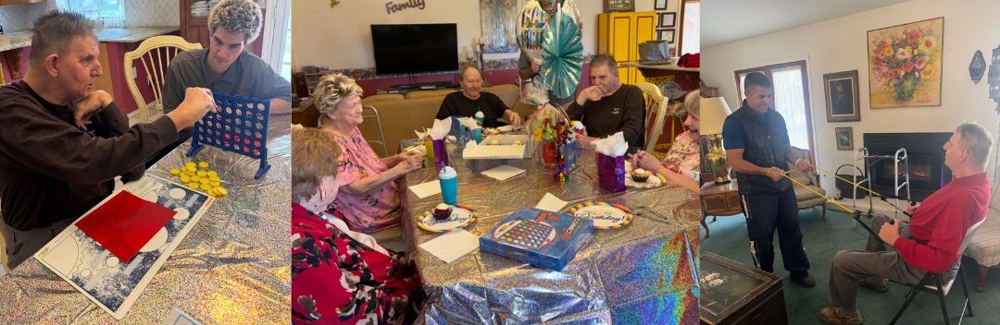

Welcome to A Caring Manor
Knock on our door for the best manor of care...
Comprehensive, Compassionate Care
At A Caring Manor, we provide full-time, live-in care in a warm, welcoming home environment. Residents enjoy personalized attention, thoughtful companionship, and supportive care tailored to individual needs—while living as part of a loving household.
What Makes Us Different
- 🕒 24/7 care and supervision in a shared home
- 🌿 Meaningful interaction with nature and animals
- 🍽️ Home-cooked meals tailored to personal dietary needs
- 🧺 Full support with grooming, medication, mobility, and housekeeping
- 🎲 Enriching activities, seasonal visitors, and community outings
- 🐶 Pet-friendly environment—residents’ animal companions are welcome
Life at A Caring Manor
Experience the Difference
Discover the peace of mind that comes from knowing your loved one is not just cared for—but truly at home. Schedule a consultation to learn more.